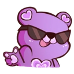

Local clubs are a great way to get to know fellow rockhounds and their interests.
Whether you want a group of friends to hang out with that have the same interests,
or you simply want to flex your collection, these clubs are the perfect place to do
that. The vast majority of rocks and minerals clubs are friendly and welcoming. It's
hard to find enthusiasts who don't want to spread their love for their minerals! Having
had limited experience with attending different clubs but loads of experience hearing about
them, here are two recommendations in Toronto (both priced under $50 per member annually)!
The Walker Mineralogy Club

This club is catered towards people of all ages and backgrounds, although it mainly consists
of those who are 18+. During meetings, members study various specimens, are given presentations
about personal success stories and mineral properties as well as engage in social events.
The club had hosted numerous field trips in the past to gain further insight into what it's
like to be in the mines and collect minerals. One perk about joining is that a lot of meetings
tend to happen at the Royal Ontario Museum, which just so happens to have one of the best
museum rocks and minerals collections in Canada.
The Walker Mineralogical Club is best known for its annual auction. During the auction, the
public is allowed to bid for high quality specimens to add to their collection. This is often
an event that nearby rockhounds look forward to as the atmosphere is lively and competitive
along with the prizes being splendid.
The Young Toronto Mineralogists Club
This club is catered towards a younger population. Specifically, those of age 7-14. Every
monthly meeting at the Ontario Science Centre is full of fun activities and new things to
try. The organizers are eager to host events to keep members engaged. Overall, it is a very
fun and playful environment involving a group of young collectors and their families.
Each meeting is structured slightly differently. The overall gist is that at the beginning
of the meeting, there's an activity called the "What's It". This is where members are asked
to identify minerals set on a table to be given out as prizes according to who was most
accurate at the end. Next, there is a presentation, activity, or workshop related to rocks
and minerals. In between, there's a break for snacks and refreshments. Members are able to
explore whatever specimens are on display as well as some microminerals. After the short break,
the activity of the day is completed and What's It winners and homework winners are announced.
When bidding farewell, all members always walk away with at least one specimen given away as
everyone leaves on a good note. This website isn't sponsored, but join Young Toronto Mineralogists
Club!
My Experience With the YTMC
I, as the author of this webpage, am going to relay my fabulous experiences with this
club to you and some of my first key memories that make this club so great. This is so that
you can understand what it's like to first be immersed into a new club!
I joined the club in the fall of 2018 with my family; my sister, my mom and my grandma. We were
looking for a community that had the same interest in rocks and minerals like us, and this
one was perfect. As soon as we stepped in, we were greeted with free minerals to take home,
snacks, and friendly smiles. I remember thinking to myself that I would fit right in. The
first specimens we received were the trilobite fossils on the right.
March 2019 was my first time becoming a junior mineralogist. Every month, a chosen member
presents a portion of their collection to the general public after the meeting. Anyone who
is interested while passing by is able to take a look at the collection and have a nice
conversation. This experience was incredibly fun. It was one of my first times being able
to "pay it forward"; I had learned about this club through a young girl being the young
mineralogist of the month as well.
In May 2019, the YTMC went on a trip to Arkona, Ontario to collect fossils. This was my very
first time collecting, and it was a great success! We returned with buckets of horn coral,
brachiopods, and crinoid stems. The private property was only accessible because of the
relations that the club has with other people, which meant that the fossils were both abundant
and in great shape!
June 2019 was the end of the year picnic! The What's It minerals at this event were especially great.
I helped my mom earn a large Chalcedony geode from identifying a lot of minerals for her. Apart from
What's It, there was a game involving guess the mineral through its properties, which I excelled at.
Over the years, the meetings remained entertaining and engaging. I have grown from knowing almost
nothing about rocks and minerals to being a complete nerd. I've gained exposure to shows,
organizations, and so much more because of the YTMC. I now volunteer at the meetings by
acting as a mentor for younger members and helping them with What's It. I definitely think that
this is a club worth joining.
TL;DR
I recommend all rocks and minerals enthusiasts to join a local club. They provide so
much more insight into all the things you can learn about mineralogy and geology and
you can often take home specimens!
 I, as the author of this webpage, am going to relay my fabulous experiences with this
club to you and some of my first key memories that make this club so great. This is so that
you can understand what it's like to first be immersed into a new club!
I, as the author of this webpage, am going to relay my fabulous experiences with this
club to you and some of my first key memories that make this club so great. This is so that
you can understand what it's like to first be immersed into a new club!